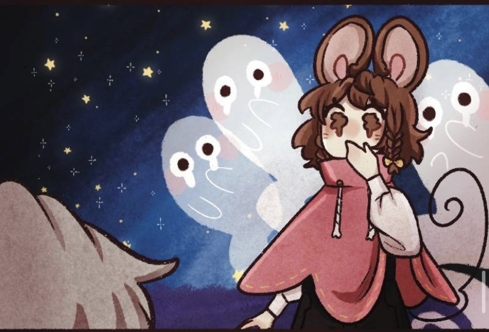

·˚・Clockmouse Quest・˚·
In a world inspired by the Mother Goose poems and rhymes, one little mouse must journey in search for... well that's the problem she has no idea what she's supposed to be looking for I guess the next best thing is to just ask around.
 The Clockmouse Quest official LInk